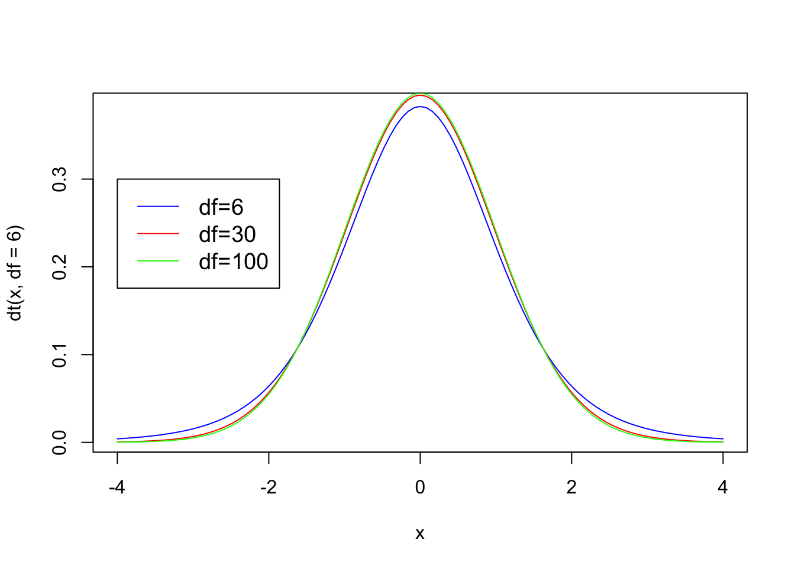
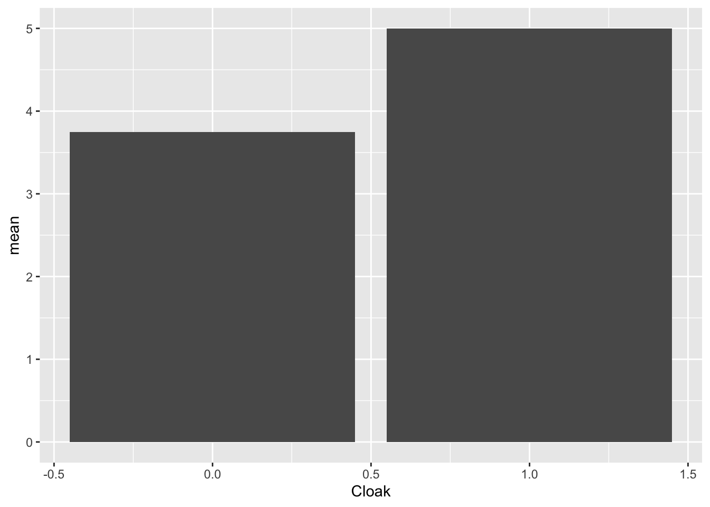
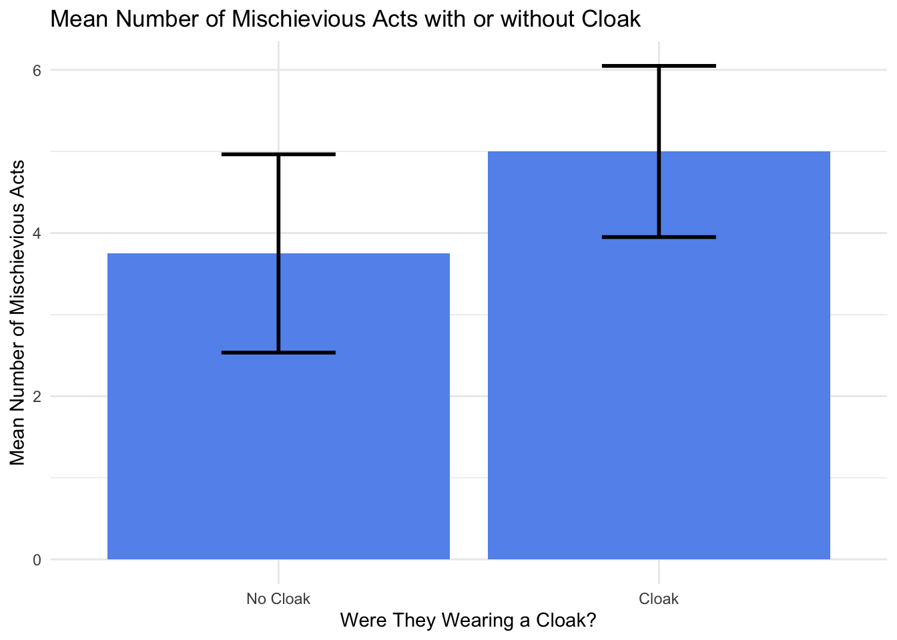

Independent t test
James Van Slyke
Resources to consult Chapter 10 from Field, A. (2017). Discovering Statistics Using IBM SPSS Statistics (5th Edition). SAGE Publications, Ltd. (UK).
Section from Learning Statistics with R
In the section on probability we learned about the binomial distribution, which is a type of probability distribution. Probability distributions allow us to look at the probability of different types of outcomes. For example, the binomial distribution enables the calculation of the probability associated with getting say 6 heads out of 25 flips of a fair-sided coin.
dbinom(x = 6, size = 25, prob = 1/2)## [1] 0.005277991For the t-test we use the t distribution to analyze the probability of the outcome of a particular experiment. More specifically, an experiment with two groups. The t distribution is similar to the binomial distribution, but much closer to the z distribution that we learned about in the section on the normal curve and z scores.
T Distribution
Pagano (2013) provides a good definition of the t distribution.
The sampling distribution of t is a probability distribution of the t values that would occur if all possible different samples of a fixed size N were drawn from the null-hypothesis population. It gives (1) all the possible different t values for samples of size N and (2) the probability of getting each value if sampling is random from the null-hypothesis population p. 329
Let’s try to unpack this a bit. First off, it’s a probability distribution constructed of t values or t scores based on all possible samples drawn from a population. Remember that samples are a smaller group taken from a population. The “fixed size N” refers to the size of the sample that was taken in the experiment, so the distribution will change it’s shape slightly based on N.
Although the t distribution is based on the sample size, it’s actually constructed by using a somewhat complicated mathematical concept called degrees of freedom or df. Degrees of freedom refers to how many scores are free to vary for a given statistic. Rather, than go too far into the weeds with this concept, for now just know that the degrees of freedom for the independent t test is \(N - 2\).
So if we had a sample size of 30, we would use a t distribution of \(df=30 - 2\) or \(df=28\) to construct the distribution.

The t distribution changes shape based on the degrees of freedom (df) that is associated with it, which is related to the sample size.

Notice that the t distribution has the same shape as a normal curve, plus it looks like the z distribution with a mean of zero and positive values above the mean and negative values below the mean. Just like with the z distribution as the absolute value of the t score increases (remember that absolute value looks at the score and ignores the +/- sign), it is associated with a lower probability. Each t score has a particular probability associated with it.
Using the Independent t test
The independent t test is used when analyzing the difference in means between two separate groups. Typically, this is used to analyze the difference between the control group (group who did not receive the independent variable) and the experimental group (group who did receive the independent variable).
Null Hypothesis - Experimental Group = Control Group
Alternative Hypothesis - Experimental Group \(\neq\) Control Group
The null hypothesis assumes that the mean difference between the two groups is equal to zero. If the samples came from the same population, their means would be roughly the same and if they came from the same population their characteristics would be the same as well. Thus, the null hypothesis assumes no real differences based on the presence of the independent variable, while the alternative hypothesis assumes that the two means are different. \[ Null = \bar X_{1} = \bar X_{2} \]
\[ Alternative = \bar X_{1} \neq \bar X_{2} \]
This type of design is sometimes referred as a between-groups or independent design. It requires a categorical (nominal) predictor or independent variable that will specify the two groups (experimental and control) and a continuous dependent variable that specifies the outcome.
There are two possible reasons why two samples have different means.
- The two sample means come from the same population, but the existence of measurement error and variability are the reason they are different. (Null hypothesis)
- The two sample means come from different populations, which have different characteristics, and reflect a genuine difference between the sample means. (Alternative hypothesis)
Independent t test formula
Remember the basic formula used in most statistical situations
\[ Statistic = \frac{Signal}{Noise} \]
The signal refers to systematic variation or variation caused by the experimental manipulation and the work of the independent variable. If the independent variable has an effect we’ll expect there to be a difference between the means. Noise refers to background noise or unsystematic variation. Variation we don’t manipulate or don’t have control over, like measurement error.
Thus, the formula for the t test can be represented as:
\[ t = \frac{difference\;between\; sample\;means}{\;measurement\; error} \]
Basically, the difference between the means is what we would expect if the independent variable has an effect. There should be some difference in the dependent variable that is a measure the effect of the independent variable. This is then compared to the measurement error. Remember that all statistical calculation contains some amount of error, but the difference between the means has to be greater that than measurement error in order to be considered statistically significant. So the numerator in the formula is simply the difference between the means of the two groups or \(\bar X_{1}-\bar X _{2}\).
As an estimate of the measurement error, the t test uses the standard deviation from the sample divided by the square root of n to calculate the measurement error. This is a form of the standard deviation, which was shown earlier as a descriptive statistic of measurement error. This statistic is known as the estimate of the standard error. So here is what our formula looks like now.
\[t = \frac{\bar X_{1}-\bar X _{2}}{estimate\; of\; the\; \;standard\; error} \]
However we need estimates from both sample 1 and sample 2 so the denominator of the equation looks like this: \[ \sqrt{\frac{s^{2}_{1}}{n_{1}}+\frac{s^{2}_{2}}{n_{2}} } \]
Finally, we can put everything together for the primary formula.\[ t = \frac{X_{1}-X_{2}}{\sqrt{\frac{s^{2}_{1}}{n_{1}}+\frac{s^{2}_{2}}{n_{2}} }} \]
Overall, for the independent t-test, if the mean difference between the two samples is significantly greater than the measurement error in the two samples (which is found by using the estimated standard error), there is a real difference between the two samples.
Independent t-test example
For the t test example, we’ll use a dataset based on a fictional experiment involving Harry Potter and the cloak of invisibility. The cloak of invisibility if the one of the deathly hallows and a gift that Harry received in year one at Hogwarts. When a person puts on the cloak they are invisible to everyone and can run around the castle doing whatever kinds of mischief then can imagine.
So the experiment involves the use of the cloak and if persons act more mischievous when they wear it. So let’s lay out the particulars of the experiment.
Independent variable (IV) = The Cloak
Dependent variable (DV) = Acts of mischief
Since this is an independent t test there will be 2 groups.
Group 1 - Experimental Group - Wears the cloak of invisibility
Group 2 - Control Group - Does not wear a cloak of invisibility
This would call for two hypotheses.
Null Hypothesis - Wearing the invisibility cloak does not increase mischievous acts
Alternative Hypothesis - Wearing the invisibility cloak increases mischievous acts
The experimental assumptions would be:
Null hypothesis -> Group 1 = Group 2 or \(\bar X_{1}=\bar X _{2}\)
Alternative Hypothesis -> Group 1 \(\neq\) Group 2 or \(\bar X_{1}\neq\bar X _{2}\)
Get Dataset
- First Step, upload dataset from SPSS
- Get data set named “Invisibility” from SPSS datasets
- Use import dataset tool under the environment tab
- Find file called invisibility.sav
library(haven)
Invisibility <- read_sav("Invisibility.sav")
View(Invisibility)Inspect variables
Invisibility$Cloak## <labelled<double>[24]>: Cloak of invisibility
## [1] 0 0 0 0 0 0 0 0 0 0 0 0 1 1 1 1 1 1 1 1 1 1 1 1
##
## Labels:
## value label
## 0 No Cloak
## 1 CloakInvisibility$Mischief## [1] 3 1 5 4 6 4 6 2 0 5 4 5 4 3 6 6 8 5 5 4 2 5 7 5
## attr(,"label")
## [1] "Mischievous Acts"
## attr(,"format.spss")
## [1] "F8.0"To begin, let’s analyze some descriptive statistics based on the “Invisibility” dataset and create a bar graph to have a first estimate as to whether there is a difference between the groups.
The first step is to create a second dataset with your descriptive
variables. We’ll use the dplyr package to do this, which is
part of tidyverse.
library(dplyr)
Invis_Descriptives <- Invisibility %>%
group_by(Cloak) %>%
summarize(n = n(),
mean = mean(Mischief),
sd = sd(Mischief),
se = sd / sqrt(n),
ci = qt(0.975, df = n - 1) * sd / sqrt(n))
Invis_Descriptives## # A tibble: 2 × 6
## Cloak n mean sd se ci
## <dbl+lbl> <int> <dbl> <dbl> <dbl> <dbl>
## 1 0 [No Cloak] 12 3.75 1.91 0.552 1.22
## 2 1 [Cloak] 12 5 1.65 0.477 1.05Notice the basic structure of the code. We use the “filter” or “pipe” function to filter the dataset based on the two groups and then find all the important descriptive statistics we need. When we take a closer look at this dataset a few things should be of interest.
Invis_Descriptives## # A tibble: 2 × 6
## Cloak n mean sd se ci
## <dbl+lbl> <int> <dbl> <dbl> <dbl> <dbl>
## 1 0 [No Cloak] 12 3.75 1.91 0.552 1.22
## 2 1 [Cloak] 12 5 1.65 0.477 1.05The first thing we should notice is that the mean number of mischievous acts without the cloak is 3.75, while the mean number of mischievous acts with the cloak is 5.00. Remember the assumption of the alternative hypothesis.
Alternative Hypothesis - Group 1 \(\neq\) Group 2 or \(\bar X_{1}\neq\bar X _{2}\)
And this is what we find when we compare the two means
\[ 3.75\neq 5.00 \]
This is also demonstrated with a basic bar graph as well.
ggplot(Invis_Descriptives,
aes(x = Cloak,
y = mean)) +
geom_bar(stat = "identity")## Don't know how to automatically pick scale for object of type haven_labelled/vctrs_vctr/double. Defaulting to continuous.
So it does look like there is a difference between these two groups. The question remains, is the difference statistically significant. Thinking back to the t-test equation, is the mean difference significantly more than the measurement error to produce a t score that is associated with a low probability?
\[ t = \frac{5.00-3.75}{measurement\; error} \]
Remember in this case, the measurement error statistic we are using is the estimated standard error, so the formula looks like this:
\[ t = \frac{5.00-3.75}{estimated\; standard\; error} \]
To find the estimated standard error, the formula is:
\[ \sqrt{\frac{s^{2}_{1}}{n_{1}}+\frac{s^{2}_{2}}{n_{2}} } \] If we were going to run the t score calculation by hand it would look like this:
\[ t = \frac{5.00-3.75}{\sqrt{\frac{1.91^2}{12}+\frac{1.65^2}{12 }}} \]So we could do the t test by hand using r
(3.75-5.00)/(sqrt(1.91^2/12 + 1.65^2/12))## [1] -1.715578Rather than needing to run the calculation by hand, we can use r to
the the calculation for us using the t.test() function.
t.test(Mischief ~ Cloak, data = Invisibility)##
## Welch Two Sample t-test
##
## data: Mischief by Cloak
## t = -1.7135, df = 21.541, p-value = 0.101
## alternative hypothesis: true difference in means between group 0 and group 1 is not equal to 0
## 95 percent confidence interval:
## -2.764798 0.264798
## sample estimates:
## mean in group 0 mean in group 1
## 3.75 5.00So we can see that the t score is -1.71 and the corresponding p value is .1007. The p value is greater than alpha or greater than .05. Thus, we fail to reject the null and our experiment does not support the idea that a cloak of invisibility increases acts of mischief.
The degrees of freedom (df) is 22, so the t distribution would take on a shape that looks like this:

Here’s a graph that shows the area for rejection of the Null (p value < .05) or retaining the null (p value > .05). Notice that the t score that is the start of the rejection area for the Null is 1.72, which is just slightly bigger than 1.71 which is the t score associated with the outcome in the invisibility cloak experiment, which makes sense since the p value was .1007 only .05 away from the alpha level.
The other statistic that will be a part of the conclusion is the effect size, which is a measurement of the magnitude of the results obtained in the experiment. Effect sizes can be used to compare the magnitude of this experiment to others and it has become standard practice to include an effect size with any statistical results.
In this case, we’ll use *cohen’s d* as a measure of the effect size. The formula for Cohen’s d is to Subtract the means from each other and then divide by the standard deviation of the control group.
We can bring up our descriptive statistics if we need to remember the means and standard deviations.
Invis_Descriptives## # A tibble: 2 × 6
## Cloak n mean sd se ci
## <dbl+lbl> <int> <dbl> <dbl> <dbl> <dbl>
## 1 0 [No Cloak] 12 3.75 1.91 0.552 1.22
## 2 1 [Cloak] 12 5 1.65 0.477 1.05So for Cohen’s d
Cohens_d <- (5.00-3.75)/1.91
Cohens_d## [1] 0.6544503Bar Graph for t Test
Earlier, we looked at a basic bar graph that showed a difference between the means. However, a key piece of information was missing from this graph, confidence intervals. Let’s go ahead and add those in.
ggplot(Invis_Descriptives,
aes(x = Cloak,
y = mean)) +
geom_bar(stat = "identity") +
geom_errorbar(aes(ymin=mean-ci,
ymax=mean+ci))## Don't know how to automatically pick scale for object of type haven_labelled/vctrs_vctr/double. Defaulting to continuous.Remember that confidence intervals show a range or interval for values of the population mean based on a sample. For an Independent t test, if the independent variable has a real effect, we would expect that the two samples come from different populations, rather than the same population. When the confidence intervals overlap as they do in the chart above that means that there is a substantial chance that these samples came from the same population. If the confidence intervals do not overlap there is a much smaller chance that they came from the same population, thus the independent variable is more likely to have had an effect.
We use confidence intervals, p values, and effect sizes to analyze an experiment. A p value may be below .05, but the confidence intervals may still be touching, so all parts of the analysis are helpful.
We can add in labels to improve the look of our chart. We’ve added labels to our factor variable and labels for the title and x and y variables.
ggplot(Invis_Descriptives,
aes(x = factor(Cloak, labels=c("No Cloak", "Cloak")),
y = mean)) +
geom_bar(stat = "identity") +
geom_errorbar(aes(ymin=mean-ci,
ymax=mean+ci)) +
labs(title = "Mean Number of Mischievious Acts with or without Cloak",
y="Mean Number of Mischievious Acts", x="Were They Wearing a Cloak?")
Next let’s add some color to our chart
ggplot(Invis_Descriptives,
aes(x = factor(Cloak, labels=c("No Cloak", "Cloak")),
y = mean)) +
theme_minimal() +
geom_bar(stat = "identity", fill="cornflowerblue") +
geom_errorbar(aes(ymin=mean-ci,
ymax=mean+ci), width=.3, size=1) +
labs(title = "Mean Number of Mischievious Acts with or without Cloak",
y="Mean Number of Mischievious Acts", x="Were They Wearing a Cloak?")
Writing up the Results
Here is how to write up the results for this experiment including all the relevant information. Of course, it’s also important to include the bar graph as well.
Results
On average, participants given a cloak of invisibility engaged in more acts of mischief (M = 5, SE = 0.48), than those not given a cloak (M = 3.75, SE = 0.55). This difference, 1.25, 95% CI[-2.76, 0.26], was not significant t(21.54) = −1.71, p = 0.101. However, it did represent a medium-sized effect d = 0.65.*
Steps to writing results
- Write out the means and include standard error
- Write out the difference between the means (Subtract the sample means) and the confidence intervals for the difference, which is a part of the r output.
- t(df)= t score, p value, Cohen’s d